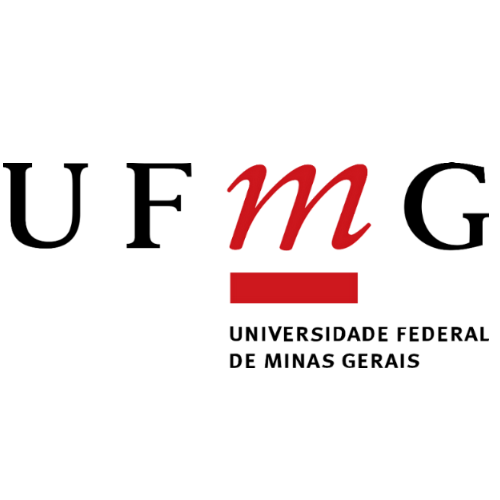

"A educação é o grande motor do desenvolvimento pessoal."
Nelson Mandela
Formação Acadêmica
Graduação em Ciência da Computação em curso, atualmente cursando o primeiro período.

Graduação em Medicina interrompida, 2 anos cursados, de 2018/2 a 2020/1.
Formação no Ensino Médio integrado com Técnico em Química, entre 2015 a 2018. Estágio em Laboratório Químico da Vale do Rio Doce em 2016.
Formação no Ensino Fundamental, conclusão em 2014.